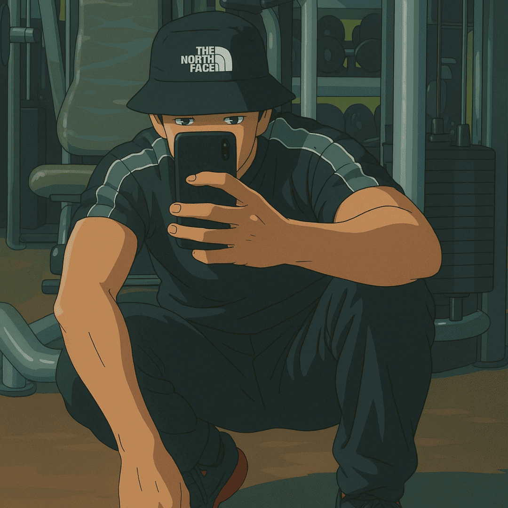

This Is IWX Studio
A small, independent studio with a simple rule: every game has to feel like something. No filler worlds, no safe ideas.
IWX Studio: An independent studio producing and developing games that break the mold the studio is currently growing.
A few years later, a wide variety of games were released for various platforms you can find them in the section Games
Currently, all games are designed to stand on their own, without needing the studio's logo to explain why they are worth your time.

iwx
Founder & Lead Developer
Handles design, programming, and production end-to-end — from first prototype to shipped build, across every game in the lineup.
Started as a one-person experiment: finish small, finish often.
Our first full release — a brutal 2D brawler about revenge in a frozen world.
A fast arcade side-project shipped alongside early work on our most ambitious world yet.
We are currently working on our biggest project yet—a game IN THE AIR Stay tuned the release date is fast approaching.
What we care about
Creating games with a distinct identity—in terms of narrative, design, and even programming—leaves a lasting impact.